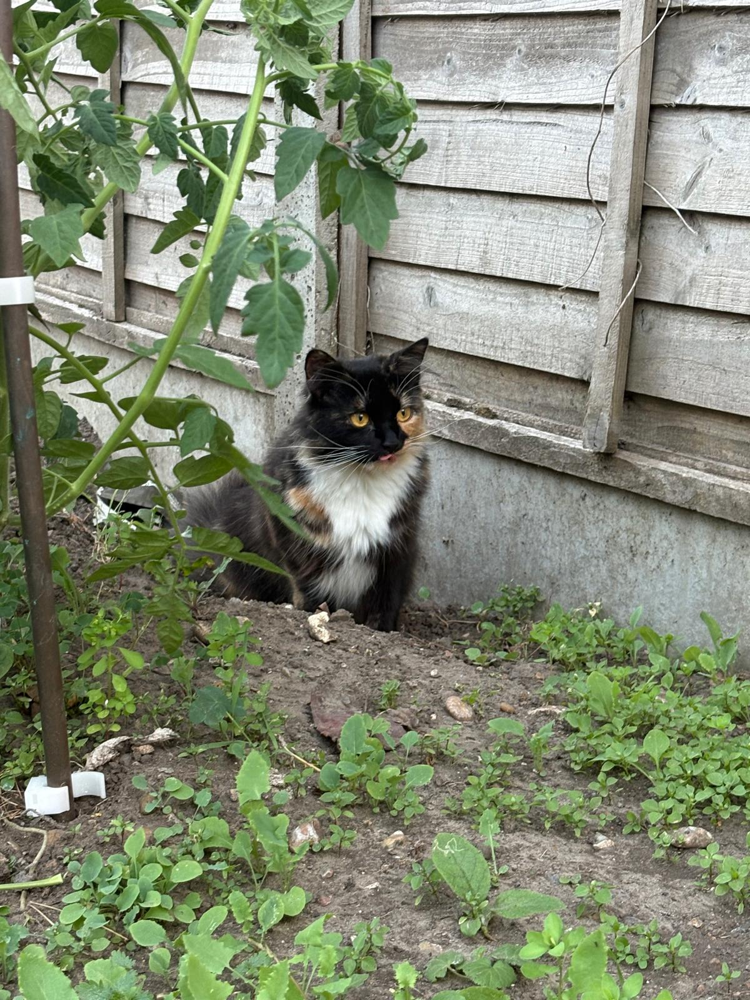
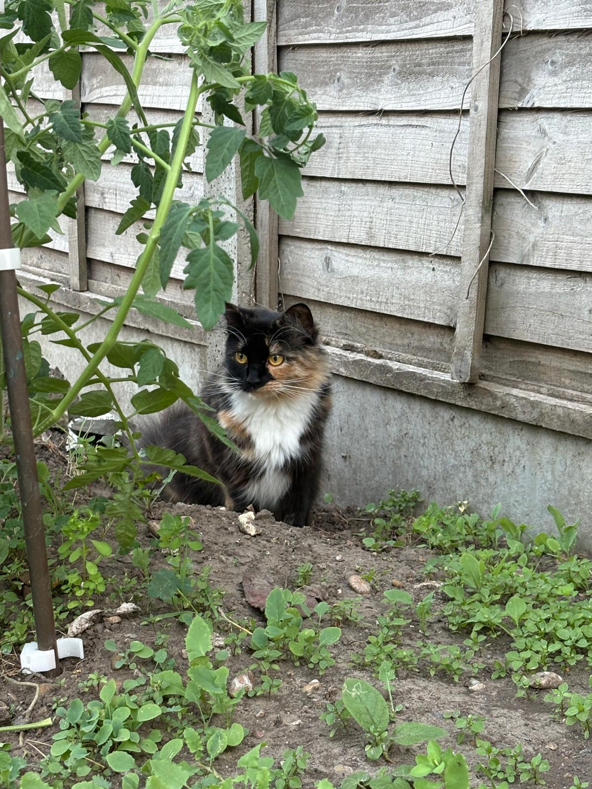

Yi Nuo C.
Aspiring Tech Degree Apprentice · Deputy Head Girl · A-level Maths, Further Maths, Computer Science, English Literature
About Me ✧


My name is Yi Nuo, and I am a Year 13 student studying A-level English Literature, Maths, Further Maths and Computer Science.
I am interested in doing a degree apprenticeship in tech 💫
In my free time, I like reading (my favourite genre is dystopia!), coding, and playing badminton 😊
Projects ✧
Canteen Management Application · Computer Science NEA (January 2026 - present)
- Designing and developing a canteen management system for school catering services, incorporating payment, inventory and allergy management features.
- Planning to develop a Python Flask backend with an SQLite database and Flutter mobile frontend, with user authentication and secure data handling.
- Designing features to improve operational efficiency and safety, including automated allergy-based purchase restrictions, stock management and sales tracking.
Handwritten Vowel Recognition Website · KWK · Live Demo (October 2026 - October 2026)
- Developed an interactive web application using HTML, CSS and JavaScript, integrating a trained machine learning model to classify handwritten vowels through webcam input.
- Designed a cohesive aesthetic and created a polaroid-style image stack with timed crossfade transitions, demonstrating front-end development skills and attention to visual detail.
- Presented the completed application to a team, demonstrating its functionality and communicating technical decisions.
English Literature Revision Website (February 2026 - present)
- Building a multi-page website using HTML and CSS, with JavaScript functionality planned to support interactive A-level English Literature revision and quote memorisation.
- Independently learning JavaScript through online tutorials and courses, applying new programming concepts to the ongoing project.
Personal Portfolio Website · Girls Who Code Pathways · [YOU'RE HERE NOW!] (July 2026 - August 2026)
- Designed and built a multi-page portfolio website using HTML and CSS, structuring content and styling layouts to communicate information clearly.
- Applied user experience and accessibility principles when designing page layouts, navigation and interface elements.
Python Calculator with Roman Numeral Conversion (September 2025 - December 2025)
- Independently developed a calculator application using Python and Tkinter, incorporating a graphical user interface and a custom-built Roman numeral conversion algorithm.
- Designed and implemented the conversion logic from scratch, applying programming logic and problem-solving skills to handle number-to-Roman-numeral conversion.
- Implemented calculation functionality and user interaction to create a functional desktop application.
Skills ✧
Programming: Python · Tkinter · HTML · CSS · JavaScript (learning) · Dart (learning)
Tools: Microsoft Excel · Microsoft PowerPoint · VS Code · Google Teachable Machine · CodeSandbox
Languages: English (fluent) · Mandarin Chinese (learning)
Experience ✧
Self-Directed Technology Work Experience Week (July 2026)
- Independently planned and completed virtual work experience exploring software engineering, web development, cybersecurity, robotics, and data science.
- Activities included analysing datasets and using data-handling techniques to present findings and develop recommendations; exploring cybersecurity tools and and approaches to investigate mock security risk incidents.
- Developed a broader understanding of the technology sector and identified areas of particular interest for further development.
Google Next Step Work Experience – Digdata (January 2026)
- Analysed a customer orders dataset using Microsoft Excel, applying filters, formulas and data organisation techniques to identify trends.
- Investigated relationships between customer demographics and purchasing behaviour to identify patterns and inform marketing decisions.
- Interpreted findings and presented data-driven recommendations to an audience using PowerPoint.
Classroom Assistant – First Class Learning (September 2025 - September 2026)
- Supported children of different ages and abilities, adapting explanations and approaches to individual needs.
- Working collaboratively with students and colleagues, developing communication, problem-solving and accountability.
Retail Volunteer – Barnardo’s (May 2024 - February 2025)
- Volunteered weekly in a retail environment supporting day-to-day operations, developing customer service, teamwork, time management and reliability.
Work Experience Placement – Saleemi Associates Chartered Accountants (May 2024)
- Supported administrative tasks involving data management and file organisation, developing attention to detail, organisation, and time management in a professional environment.
Education ✧
Carshalton High School for Girls, Sutton
A-levels (predicted): English Literature (A*), Maths (A*), Further Maths (A), Computer Science (A)
GCSEs: 11 GCSEs at grades 9-7, including Maths (8), Computer Science (8), and English Language (7)
Contact Me ✧
Feel free to reach out via email or connect with me on LinkedIn!